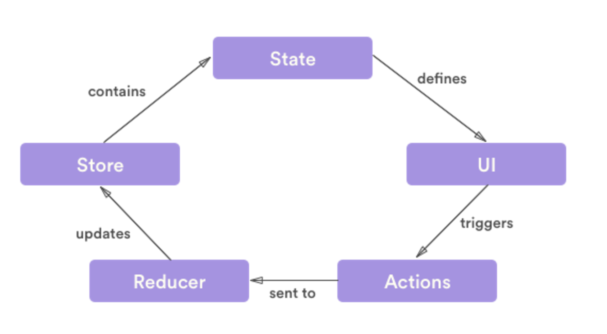

Welcome to Day 3 of ReactJS Bootcamp
Agenda
State management in single page application
Patterns
- No framework (imperative)
- Framework based pattern
No framework pattern (imperative)
- Do it yourself
Framework based pattern
- BackboneJS
- AngularJS
- Flux
Backbone JS

Angular JS
- Using $rootScope
- Using angular factory

Flux

Flux is really just a fancy term for pub/sub architecture,
i.e. data always flows one way through the application and
it is picked up along the way by various subscribers (stores)
who are listening to it.
Why Flux
- State is messy
- Unidirectional data makes for easy debugging
- Composable components favor reuse
- Stores as a single domain also simplifies debugging
Dispatcher
- *SINGLE* messaging hub in the application
- Registry of callbacks
- Has no logic
- Dispatcher recieves actions and fires corresponding callback
- Can manage dependencies between stores
Stores
- Contain the domain logic
- More than just a model
- All stores get the callback from the dispatcher and handle in a case statement
- Changes made through dispatcher -> Store's case statement on action type -> Data update -> Fire change event
- Views can query the store but they are treated as immutable from view's perspective
Actions
- Views can start the communication intents via actions
- Actions are sent through the dispatcher and sent out to the stores
- We have had luck with past tense but it doesn't matter as long as you are consistent
- Try to keep actions generic where possible
Redux
- Redux is a framework that controls states in a JavaScript app.
- According to the official site:
Redux is a predictable state container for JavaScript apps.
Why Redux

Advantages
- "A predictable state container"
- Single source of truth
- Portable code
- Separate presentation layer from logic and data
- You can specify the behavior of your app before even starting to write the UI.
Basic principle
(previousState, action) => newState
Redux way of working

Testing React/Redux using Brunch
Agenda
We will learn how to setup test framework in brunch and test the following:
- Actions
- Async Actions
- Reducers
- Components
- Containers
First we install chai and mocha:
npm install chai mocha --save-devTest config for mocha
- Create a
testdirectory. - Add a
.mocha.optsfile in the test directory. - In .mocha.opts file add the following commands:
--compilers js:babel-core/register --require jsdom-global/register - Add a .babelrc file at the root level
{ "presets": ["es2015", "react"] }
Testing Actions:
actions.handles.spec.js in test dir
// test/actions.handles.spec.js
import {expect} from 'chai'
import {requestTweets} from 'actions/handles'
describe('Handle actions', () => {
it('should return object with correct values', () => {
const action = requestTweets('test')
expect(action.type).to.be.equal('REQUEST_TWEETS')
expect(action.handle).to.be.equal('test')
})
})Testing Reducers:
reducers.handles.spec.js in test dir
// test/reducers.handles.spec.js
import {expect} from 'chai'
import {REQUEST_TWEETS} from 'actions/handles'
import handlesReducer from 'reducers/handles'
describe('Handles reducer', () => {
it('should return initial state', () => {
const state = handlesReducer(undefined, {})
expect(state instanceof Array).to.equal(true)
})
it('should return correct new state', () => {
const action = {
type : REQUEST_TWEETS,
handle: 'test'
}
const newState = handlesReducer(undefined, action)
expect(newState.length).to.equal(1)
expect(newState[0].name).to.equal('test')
expect(newState[0].isFetching).to.equal(true)
expect(newState[0].data instanceof Array).to.equal(true)
})
})Testing Components:
- So we will be using a mocha helper in this case
npm install jsdom jsdom-global --save-dev- Also for testing React components we will be using React testing utilities
npm install react-addon-test-utils enzyme --save-dev
Create a components.handle-form.spec.js in your test directory
// test/components.handle-form.spec.js
import {expect} from 'chai'
import React from 'react'
import { shallow } from 'enzyme'
import HandleForm from '../app/components/handle-form'
describe('Components.HandleForm', () => {
const node = shallow(Testing Async Actions:
Please refer to Redux docs for more information on testing Async actions.
Testing containers
(connected components)
Please refer to Redux docs for more information on testing Async actions.
Recap expectations
- Why react is so popular?
- Min libraries to get a UI app running/development.
- Comparisons between react and angular.
- Testing using React.
- Debugging a UI application.
Q&A
- Swapneel Desai
- Ashish Pundalik
- Abhinav Sharma